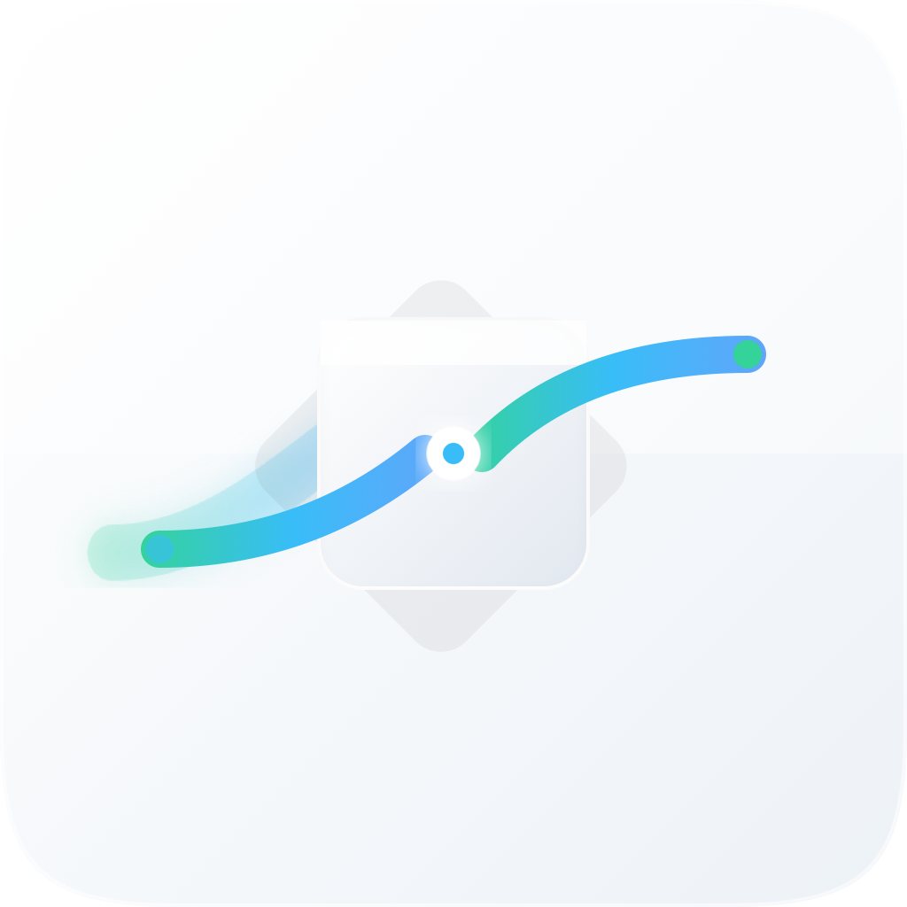

你的节点，你的连接。
双击切换入口 · 出口始终保持美国静态家宽
先启动 Clash Verge，参照示例配置设置链式代理并选择全局 → 美国静态家宽。链路盒子会自动识别本机控制接口。
自动识别
自动识别运行中的 verge-mihomo.exe
关闭主窗口后继续在托盘运行；完全退出请使用托盘菜单。测速最多 5 个独立内核并行，不切换当前节点。
正在独立检查，不修改代理或 Claude Code。
浏览器项目指本应用的 Chromium 环境，不代表其他浏览器。超时或无连接均标为未验证。结果仅对应本次网络。